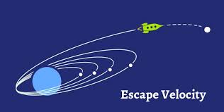
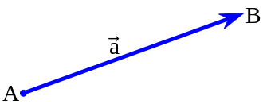
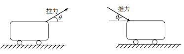
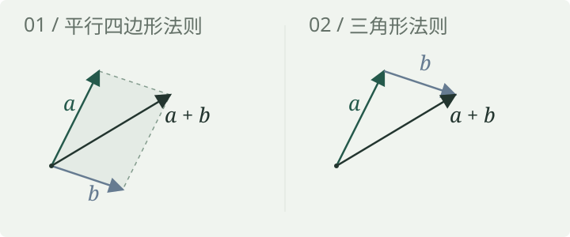
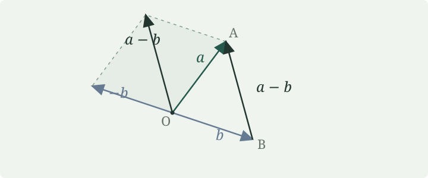
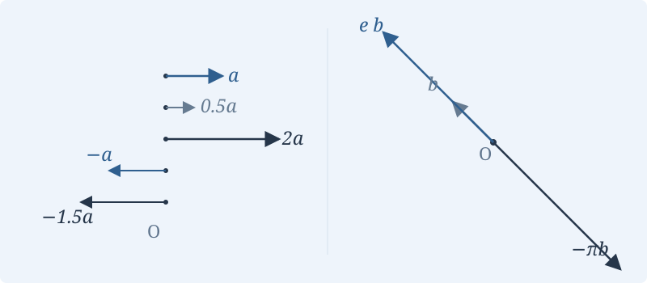

整节阅读 · 共 9 个部分
1.1 向量及其运算
完整阅读本节，或使用浏览器的打印功能保存。切换到分页学习 →
什么是向量？
我们熟悉的速度、位移和力，都既有大小，又有方向。把这些共同特征抽象出来，就得到本章首先讨论的几何向量。向量可以写成 \(\overrightarrow{AB}\) 或 \(\vec a\)，其模长记作 \(|\vec a|\)。



想一想
只知道汽车的速度大小是每小时 60 千米，能确定它的速度向量吗？
查看答案与解释
不能。还需要知道运动方向。向量同时包含大小和方向。
什么时候两个向量相等？
相等看大小与方向
具有相同大小与方向的有向线段表示相等的向量。平移箭头不改变向量。
本章讨论的几何向量不固定在某个起点上。同一个向量可以画在不同位置；比较时，可以把两个箭头平移到同一起点。
只有长度相同还不够，方向也必须相同。
想一想
两个箭头长度相等，其中一个向东，另一个向北。它们表示相等的向量吗？
查看答案与解释
不相等，因为方向不同。如果两个箭头都向东且长度相等，即使起点不同，也表示相等的向量。
几种特殊的向量
零向量
零向量 \(\vec0\) 的模长为 0。按讲稿约定，任意方向都视为零向量的方向，因此它与任意向量平行；它本身没有唯一确定的方向。
单位向量
模长为 1 的向量叫作单位向量。不同方向可以有不同的单位向量。
负向量
与非零向量 \(\vec a\) 大小相同、方向相反的向量记为 \(-\vec a\)。零向量的负向量仍是零向量。
想一想
一个向量的模长为 1，它的负向量还是单位向量吗？
查看答案与解释
是。取负向量只改变方向，模长仍为 1。
向量怎样相加？
向量加法：平行四边形法则与三角形法则
让两个向量共用起点，所构成的平行四边形的对角线给出 \(\vec a+\vec b\)。也可以把 \(\vec b\) 的起点接到 \(\vec a\) 的终点：从最初起点到最终终点的箭头，就是它们的和。

探索 · 比较两种加法作图
演示即将加入先在纸上画出同一对向量的平行四边形法则与三角形法则，再交换相加顺序。未来这里可拖动箭头并调节数乘系数。
想一想
从点 \(A\) 走到 \(B\)，再从 \(B\) 走到 \(C\)，两次位移之和是什么？
查看答案与解释
把两个箭头首尾相接，从最初起点指向最终终点。
向量怎样相减？
向量减法：先取负向量，再做加法
若 \(\vec a=\overrightarrow{OA}\)、\(\vec b=\overrightarrow{OB}\)，那么 \(\vec a-\vec b=\overrightarrow{BA}\)。注意箭头从 \(B\) 指向 \(A\)。

想一想
若 \(\vec a=\overrightarrow{OA}\)、\(\vec b=\overrightarrow{OB}\)，\(\vec b-\vec a\) 指向哪里？
查看答案与解释
从 \(A\) 指向 \(B\)，即 \(\overrightarrow{AB}\)。交换被减向量与减向量，箭头方向也随之反转。
一个数乘向量意味着什么？
向量的数乘

设 \(\lambda\in\mathbb R\)。向量 \(\lambda\vec a\) 的长度是 \(|\lambda|\,|\vec a|\)。当 \(\vec a\ne\vec0\) 时，\(\lambda>0\) 保持方向，\(\lambda<0\) 反转方向；当 \(\lambda=0\) 或 \(\vec a=\vec0\) 时，结果是零向量。
若 \(\vec a\ne\vec0\)，讲稿用下面的记号表示与它同向的单位向量：
线性运算
向量的加法和数乘统称为向量的线性运算。它们的八条基本性质，是以后公理化定义线性空间的出发点。
例题 · 缩放一个箭头
讲稿中的 \(0.5\vec a\)、\(2\vec a\) 分别把箭头缩短一半、放大两倍；\(-\vec a\)、\(-1.5\vec a\) 还会反转方向。对于非零向量 \(\vec b\)，\(-\pi\vec b\) 反向且长度变为 \(\pi\) 倍，\(e\vec b\) 则同向且长度变为 \(e\) 倍。
向量加法满足什么规律？
对任意空间向量 \(\vec a,\vec b,\vec c\)，向量加法满足以下四条性质：
- 加法交换律：\[\vec a+\vec b=\vec b+\vec a\]
- 加法结合律：\[\vec a+(\vec b+\vec c)=(\vec a+\vec b)+\vec c\]
- 存在零元：\[\vec a+\vec0=\vec a=\vec0+\vec a\]
- 存在负元：\[\vec a+(-\vec a)=\vec0=(-\vec a)+\vec a\]
想一想
连续做三次位移时，先合成前两次还是先合成后两次，会改变最终位移吗？
查看答案与解释
不会。这正是加法结合律的含义。
数乘满足什么规律？
对任意空间向量 \(\vec a,\vec b\) 和实数 \(\lambda,\mu\)，数乘满足以下四条性质：
- 数乘单位元：\[1\vec a=\vec a\]
- 数乘结合律：\[\lambda(\mu\vec a)=(\lambda\mu)\vec a\]
- 左分配律：\[(\lambda+\mu)\vec a=\lambda\vec a+\mu\vec a\]
- 右分配律：\[\lambda(\vec a+\vec b)=\lambda\vec a+\lambda\vec b\]
这里的性质先来自几何向量。第六章“线性空间”将把这八条性质作为一般定义的基础。
想一想
\(2(\vec a+\vec b)\) 如何展开？
查看答案与解释
这是数乘对向量加法的分配律。
本节回顾与自测
把本节串起来
- 向量同时描述大小与方向；平移不改变向量。
- 加法可以用平行四边形法则或三角形法则作图。
- 减法先取负向量，再做加法。
- 数乘由系数决定长度变化与方向变化。
- 加法与数乘统称线性运算，共满足八条基本性质。
即时自测
已知 \(\vec a=\overrightarrow{OA}\)、\(\vec b=\overrightarrow{OB}\)。\(\overrightarrow{AB}\) 等于什么？若 \(|\vec a|=2\)，\(-\tfrac32\vec a\) 的长度和方向是什么？
查看答案与解释
\(\overrightarrow{AB}=\vec b-\vec a\)。\(-\tfrac32\vec a\) 的长度为 3，方向与 \(\vec a\) 相反。减法与数乘都要区分“长度”和“方向”。
能够独立解释答案后，可以把本页标记为“已学会”，再进入 1.2 节讨论向量的线性相关性。